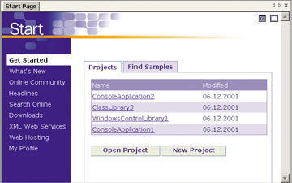
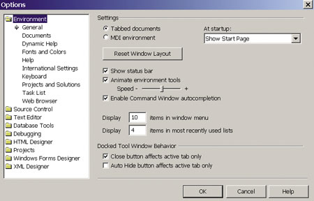
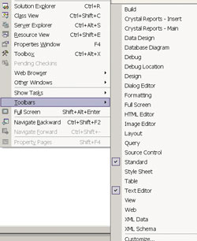
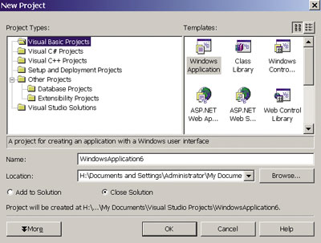
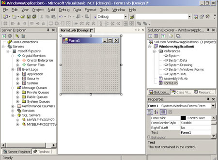
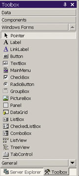
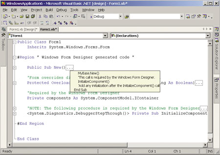
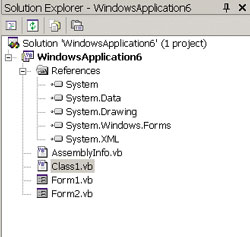
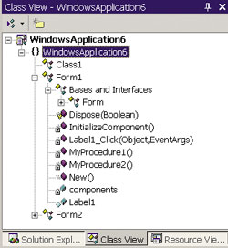
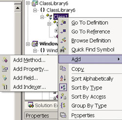

Андрей Колесов
По мнению большинства экспертов, жизненный путь платформы .NET по-настоящему начнется с появлением на рынке комплекса средств разработки нового поколения Visual Studio .NET. Его официальное представление и начало продаж коробочных версий должны состояться в феврале 2002 г., а подписчики службы MSDN должны были получить комплекс еще в декабре прошлого года. Важность VS.NET для всей концепции Microsoft .NET вполне понятна: успешное продвижение платформы решающим образом зависит от наличия широкого круга прикладных .NET-приложений, т. е. от решения независимых разработчиков, на что делать ставку — на .NET или на J2EE.
Visual Studio .NET — это не Visual Studio 7.0
Сразу после появления первой публичной бета-версии VS.NET в конце 2000 г. стала очевидной серьезность намерений Microsoft относительно реализации своей новой платформы (см. "В ожидании Visual Studio .NET", «BYTE/Россия» № 1/2001). Разработчики сразу поняли, что их ожидает не просто очередная модификация инструментария, а весьма решительная смена логики и стиля создания приложений. Именно поэтому более полугода в СМИ (в том числе в Интернете) шли активные дискуссии "за» и «против" предлагаемых новшеств. Особый накал обсуждений наблюдался в среде VB-программистов, что было вызвано радикальными изменениями в новой версии VB и ожиданиями серьезных проблем с миграцией старых VB-приложений на платформу .NET (см. цикл статей "А ты готов к VB.NET?", «BYTE/Россия» № 3, 6, 8/2001). Масла в огонь подливало и появление нового языка C#, который всеми был воспринят как прямой конкурент Java.
При этом совершенно очевидно, что накал дискуссий определялся не переживаниями типа "не трогайте каноны любимых нами языков" и даже не проблемами будущей миграции (последнее должно заботить руководителей ИТ-отделов, для программистов же это означает только появление новых рабочих мест, столь желанных в наше трудное для отрасли время). Дело в том, что многие специалисты отчетливо осознали возможное влияние новой технологии на личную судьбу: достаточно вспомнить весьма болезненный переход в начале 90-х от DOS к Windows.
Споры о новшествах VS.NET стихли с появлением в начале лета 2001 г. второй бета-версии пакета. Стало понятно, что Microsoft будет настойчиво продвигать предложенные новшества. А раз так, то у программистов не так много вариантов: начать осваивать новые средства разработки, перейти на инструментарий другого поставщика, вариться в среде VS 6.0 в ожидании выхода на пенсию или радикально сменить профессию.
Скорее всего, на этот раз ситуация будет не столь драматичной, как 10 лет назад, но следует иметь в виду, что речь идет не о простом обновлении версии используемого инструмента, а о достаточно радикальном изменении технологии разработки. Хотя в VS.NET часто используется рабочий номер версии 7.0, было бы правильнее говорить о VS.NET 1.0.
В то же время очевидно, что реально переход на новую технологию будет эволюционным и две версии инструментария VS (6.0 и .NET) будут сосуществовать параллельно довольно долго. По оценкам Gartner Group, переход в целом завершится через 2—3 года. Но в любом случае осваивать VS.NET следует начинать уже сейчас.
Стратегические цели
По определению самой Microsoft, VS.NET — это инструмент, использующий разные языки программирования и предназначенный для создания распределенных приложений на базе Web-сервисов и XML. Эти приложения должны обеспечивать доступ к информации "в любом месте, в любое время и через любое устройство". Легко заметить, что от рекламы других современных средств разработки это высказывание отличается наличием слов о разных языках. С другой стороны -- умалчивается, что речь идет о приложениях, работающих в среде Microsoft .NET.
С моей точки зрения, ключевые новшества VS.NET — это:
- реализация единой среды разработки для разных языков программирования;
- глубокая интеграция с операционной средой .NET Framework ("близнецы-братья") с широким применением (конечно же!) XML Web Services;
- ориентация на поддержку всего цикла разработки распределенных корпоративных приложений, включая серверные и мобильные компоненты.
Мы рассмотрим основные элементы интегрированной среды разработки (Integrated Development Environment, IDE), которая сама по себе отражает важные изменения в технологии создания приложений.
Оба предыдущих варианта пакета средств разработки Visual Studio (с номерами версий 97 и 6.0) представляли собой набор автономных инструментов с использованием некоторых общих дополнительных компонентов. Некоторый шаг к их интеграции был предпринят в версии 6.0, с созданием единой справочной системы, хотя, честно говоря, этот вариант трудно назвать очень удачным.
Ключевая идея VS.NET — это единая среда разработки, которая использует одинаковую для всех языков логику создания приложений, общий набор различных программных компонентов, в том числе библиотек классов. Понятно, что это в значительной степени нивелирует специфику разных языков, но зато решает массу проблем разработки, в частности, упрощая смешанное программирование. Сразу отметим расширенные возможности программной настройки VS.NET IDE с помощью дополнительной среды VBA для создания макросов, как это ранее было сделано для Microsoft Office.
Microsoft предлагает пять языков "собственного изготовления": VC++, C#, VB.NET, Jscript и J#. В самую позднюю предварительную версию VS.NET включены первые три. Каким образом будут распространяться остальные — пока вопрос открытый. Вместе с тем создается впечатление, что такие отдельные продукты, как VC++, С# и VB.NET, возможно, в будущем и не появятся (подождем официального объявления). Учитывая, что в этих продуктах множество единых компонентов, это было бы вполне естественно.
Независимые поставщики также могут подключить свои средства программирования к среде VS.NET. К настоящему времени известно более 30 систем на базе разных языков (Cobol, Fortran, Perl и т. п.), которые поддерживают создание .NET-приложений. Некоторые из них имеют специальные компоненты, которые можно интегрировать в среду VS.NET. Пока трудно сказать, можно ли будет купить, например, FORTRAN со средой VB.NET IDE или нужно будет сначала приобрести некоторый выпуск VS.NET, а потом соответствующий FORTRAN-компонент.
Линейка VS.NET будет включать выпуски Academic, Professional и две версии Enterprise (Architect и Developer). Обсуждение конкретных вариантов поставок лучше отложить до официального объявления продукта.
Установка VS.NET Professional Candidate Release
Для подготовки этой статьи я установил версию VS.NET Professional Candidate Release, полученную в конце октября на конференции Microsoft PDC'2001. Это последняя версия перед выпуском окончательного варианта, в которой зафиксированы все спецификации продукта.
Система была записана на DVD-ROM, что в моем случае послужило поводом к приобретению соответствующего привода. Правда, Microsoft обещает выпускать продукт и на CD-ROM. Из инструкции по установке стало окончательно ясно, что VS.NET не будет работать на Windows 9x (ранее представители компании уклончиво отвечали, что на этой платформе не проводилось тестирование бета-версий). Остальные системные требования приведены в таблице.
Перед установкой в соответствии с инструкцией пришлось вручную удалить предыдущие бета-версии .NET Framework и VS.NET. Эта операция заняла 10 мин работы компьютера с Pentium III 800 МГц и 256 Мбайт оперативной памяти. Установка нового варианта заняла всего полтора часа.
В инструкции по установке есть весьма примечательная рекомендация: после деинсталляции VS.NET бета 2 лучше всего отформатировать жесткий диск...
Системные требования для установки VS.NET Professional
| Процессор | Pentium II, 450 МГц (Pentium III, 600 МГц) |
| Оперативная память, Мбайт | Windows NT 4.0 Workstation — 64 (96);
Windows NT 4.0 Server — 160 (192) Windows 2000 Professional — 96 (128); Windows 2000 Server — 192 (256) Windows XP Professional — 160 (192) |
| Свободное место на жестком диске | 500 Мбайт на системном диске, 3 Гбайт на установочном диске |
| Операционная система | Windows XP, Windows 2000 и Windows NT 4.0 |
| Привод CD-ROM или DVD-ROM | Необходим |
| Примечание: указаны минимальные параметры, в скобках — рекомендуемые. | |
Стартовая страница
Сразу хотел бы отметить: среда разработки претерпела очень серьезные изменения. Мало того что появилось много нового, ранее известные функции изменились, команды меню поменяли свои места. Толковых описаний работы в среде VS.NET фактически еще нет. Поэтому сейчас мы бросим именно "первый взгляд", пойдем сквозь лабиринт новшеств методом проб и ошибок. Я постараюсь отмечать некоторые обнаруженные мною проблемы, но сразу подчеркну — возможно, многие из них не связаны с самим продуктом, а являются следствием моего неглубокого знания новой среды. (Буду очень благодарен читателям, которые смогут дополнить мои изыскания.)
Кстати, почти пять лет назад мне пришлось писать пару статей с описанием новшеств визуальной среды VB 5.0 (см. http://www.microsoft.com/rus/msdn/library/kolesov). Тогда много говорилось о ее радикальных изменениях по сравнению с дизайном VB 1.0—4.0. Сейчас хорошее описание среды VS.NET легко потянет на небольшую книжку. Поскольку ранее мне приходилось работать с VB, я буду сейчас анализировать новшества в значительной степени с точки зрения именно этой системы программирования.
Итак, запустим VS.NET — на экране появится среда с ее стартовой страницей VS Home Page (рис. 1). В правом окне виден список последних выполненных проектов, а также кнопки, с помощью которых открывается ранее созданный проект или создается новый. С помощью вкладки Find Samples можно с помощью ключевых слов выполнить поиск подходящих примеров, записанных в соответствующих разделах установочного каталога.
|  | Рис. 1. Стартовое окно среды VS.NET.
|
В левой части находится список дополнительных команд. С помощью My Profile можно настроить представление среды в соответствии с пожеланиями конкретного разработчика. Ссылка What's New поможет познакомиться с новшествами VS.NET. Правда, тут я столкнулся с первой проблемой — перейдя в окно справочной системы, я потом смог вернуться на домашнюю страницу только после перезапуска VS.NET. Остальные команды представляют собой ссылки на различные Интернет-ресурсы. К сожалению, их, похоже, нельзя пополнять самостоятельно.
Чтобы оценить масштаб возможностей настройки среды, откроем диалоговое окно Options (рис. 2). Масштабы значительные, не говоря уже о том, что в среде разработки резко возросло число различных диалоговых окон (Explorers) и панелей управления (рис. 3).
|  |
| Рис. 2. Настройка параметров предлагает гораздо больше возможностей.
|
|  | Рис. 3. Добавилось большое число диалоговых средств и панелей управления.
|
Претерпела изменения логика работы справочной системы, для которой можно выдать несколько разных окон, постоянно находящихся в среде разработки. Окно Contents представляет традиционный вариант иерархического описания содержимого справки, а Dynamic — набор ссылок, динамически меняющийся в зависимости от того, что мы делаем в основном окне среды. Обратите внимание: для VB и С# выдается единый набор справочных ссылок (схожесть этих языков я уже отмечал ранее).
Создание проекта
Теперь обратимся к команде "открыть новый проект", после вызова которой появляется соответствующее окно (рис. 4). Тут мы можем выбрать нужный нам язык программирования (в левой части окна) или какой-то специальный конструктор — этот список может пополняться инструментами независимых разработчиков. В правой части окна нужно указать тип создаваемого нами проекта. Сейчас мы выберем вариант VB и Windows Application.
|  | Рис. 4. Выбор языка и типа проекта.
|
Теперь мы можем увидеть три основные части визуальной среды при разработке проекта (рис. 5). В центре находится главное окно для создания визуальных форм и написания кода. Слева размещается окошко Solution Explorer, которое заменило старый Project Explorer, а также в основном знакомое окно свойств Properties Explorer.
|  |
| Рис. 5. Общий вид среды при разработке проекта.
|
Одно из принципиальных новшеств среды VS.NET — средство Server Explorer, которое размещается в левой части экрана. Оно делает доступным разработчику все имеющиеся программные ресурсы его локального компьютера и сети. По сути, это расширенный вариант средства управления данными, реализованного ранее в Visual InterDev 6.0 (кстати, именно модификация этого продукта фактически стала основой всей интегрированной среды разработки), но только сейчас вы можете манипулировать не только базами данных, но и различными другими серверами и службами, устанавливая нужные соединения или добавляя компоненты простым перетаскиванием мышью. На другой вкладке этого же окна находится набор элементов управления Toolbox, который не только изменил дизайн, но и существенно пополнился в составе — в него входят три группы: Data, Components и Windows Forms (рис. 6).
|  | Рис. 6. Расширенный вариант панели элементов управления.
|
Для эффективного использования экрана для всех окон можно установить режим Auto Hide (автоматическое скрытие неиспользуемых окон) с помощью соответствующей кнопки.
Управление программным кодом
Посмотрим, что представляет собой программный код, сформированный по умолчанию при создании простейшего проекта. Раньше, в VB 6.0, он был пустым, теперь же он сразу заполняется операторами (рис. 7). Прежде всего здесь видно, что если ранее программные модули состояли из линейной последовательности процедур, то теперь они реализованы в виде иерархической структуры (это я уже показывал в обзоре .NET Framework в «BYTE/Россия» № 01/2002 на примере создания иерархии .NET-компонентов внутри одного класса). Хотя размещенная слева структура узлов представлена в виде линейки, легко убедиться, что она соответствует древовидной структуре модуля.
|  |
| Рис. 7. Иерархическая структура программного кода.
|
Верхний уровень иерархии определяется операторными скобками Class. Каждый узел на этой линейке соответствует отдельной процедуре (или аналогичной конструкции). С помощью узлов можно делать видимыми только нужные для работы фрагменты кода. Если мы закроем узел, то в заглавной строке этого блока появится небольшое окошко с многоточием. Подведя к нему мышь, мы сможем увидеть содержимое данной конструкции (см. рис. 7).
Посмотрев на код, автоматически сгенерированный конструктором форм, мы обнаружим, что там записаны операции, которые ранее мы не могли видеть в явном виде. Например, при создании новой формы по умолчанию выполняется следующий код:
Public Sub New()
MyBase.New()
InitializeComponent()
End Sub
<System.Diagnostics.DebuggerStepThrough()>
Private Sub InitializeComponent()
Me.AutoScaleBaseSize = New System.Drawing.Size(6, 15)
Me.ClientSize = New System.Drawing.Size(392, 192)
Me.Name = "Form1"
Me.Text = "Form1"
End Sub
|
Но зачем он тут показан — не очень понятно, так как тут же находится комментарий, гласящий, что редактировать данный код нельзя, так как он формируется конструктором.
Теперь посмотрим на очень полезное новшество — использование операторных скобок #Region, которые позволяют группировать в блоки отдельные процедуры (у нас уже есть один такой блок Windows Form Generator designed code, созданный конструктором форм автоматически). Добавим в окно кода новые строки, используя вложенные скобки #Region:
#Region "Тут находится код моей бизнес-логики"
' это блок 1-го уровня
Private Sub MyProcedure1()
Dim a As Integer
a = 1
End Sub
#Region "Блок второго уровня"
Private Sub MyProcedure2()
End Sub
#End Region
#End Region
|
К сожалению, такая иерархическая конструкция в окне VS.NET отражается в виде линейного текста (авторам VS.NET есть еще над чем поработать), но, управляя раскрытием отдельных узлов, легко убедиться, что мы имеем дело именно с вложенной структурой кода.
Продолжая наши исследования, добавим к форме Form1 визуальный элемент управления Label1, создадим для него событие Click, добавим к проекту еще одну Windows-форму Form2 и посмотрим, что представляет собой окно Solution Explorer для полученного нами проекта (рис. 8).
В отличие от того, что мы видели в VB 6.0, в структуре проекта появился раздел References, где в явном виде указаны все ссылки на внешние компоненты (мы обсуждали это в предыдущей статье о .NET Framework на примере создания простейших .NET-компонентов). Исчезло группирование отдельных модулей по типам (формы, классы и пр.), но зато в этом же окне появилась вкладка Class View, с которой полезно познакомиться (рис. 9).
|  |  |
| Рис. 8. Окно Solution Explorer.
|
Рис. 9. Окно Class View.
|
Вкладка содержит то, о чем VB разработчики слезно молили Microsoft в течение 10 лет — с момента появления VB 1.0: обычный древовидный "проводник" для перемещения по всем элементам программного проекта, до отдельных процедур включительно. Конечно, и тут есть еще над чем поработать. Например, хотелось бы сгруппировать событийные процедуры с соответствующим элементом управления (Label1 и Label1_Click), отразить в окне созданную нами иерархию процедур (т. е. увидеть скобки #Region), увидеть глобальные переменные... Но, наверное, нельзя требовать от разработчиков VS сразу так много, нужно же что-то оставить и для версии VS 10.
Создание решения
Появление окна Solution Explorer вместо Project Explorer отражает еще один важный момент: переход от создания отдельных проектов к разработке решений, состоящих из нескольких проектов. Впрочем, нечто подобное было реализовано еще в VB 5.0 и называлось Project Group, но там это работало только в рамках одного языка программирования. Сейчас мы можем делать то же самое с использованием разных языков.
Чтобы проверить это, выберем команду File | Add Project | New и добавим к текущему решению (хорошо бы придумать какой-нибудь новый термин для такого группового проекта) новый проект на C#. Теперь мы можем работать над нашим приложением, легко перемещаясь между различными программными компонентами, реализованными разными языковыми средствами.
Однако, говоря о единой среде для всех языков, стоит отметить, что до полного единообразия тут еще предстоит проделать некоторый путь. Например, при работе с проектом на C# можно легко добавить новую процедуру к модулю, щелкнув правой кнопкой мыши на его названии, выбрав в контекстном меню команду Add (рис. 10) и затем заполнив удобное диалоговое окно описания процедуры. К сожалению, для VB-проекта такая операция просто отсутствует (хотя и была всегда, начиная с версии 1.0), приходится делать описание процедур вручную, как в старые добрые времена ввода кода с помощью обычного текстового редактора...
|  | Рис. 10. Так добавляется новая процедура для C#.
|
Это еще далеко не все
Помимо обычных программных модулей, мы можем с помощью команды File | Add Item подключать к проекту самые разные компоненты, например, HTML-страницу, которую затем можно наполнить с помощью встроенного HTML-редактора. Кроме того, в среде разработчика имеется новый дизайнер XML-документов и XSD-схем, набор графических редакторов и целый ряд других инструментов.
Существенные изменения коснулись и среды конструктора форм. Во-первых, стала более унифицированной процедура создания форм для Web и Windows. Во-вторых, реализован механизм визуального наследования Windows-форм, что упрощает повторное использование кода. Как уже отмечалось, расширен состав элементов управления.
Отдельно нужно упомянуть о возможности использования макросов (а не только двоичных надстроек Add-Ins) для программной настройки среды VS.NET с использованием ее новой объектной модели. Для этого имеется своя собственная среда разработки VBA-проектов. Однако сразу отметим, что логика работы в ней серьезно отличается от той, что реализована в Microsoft Office, и на освоение этих возможностей придется потратить некоторое дополнительное время.
Мы успели рассмотреть лишь относительно небольшую часть компонентов визуального интерфейса VS.NET, ведь существует еще большой набор мастеров, конструкторов, средств отладки, не говоря уже о расширениях варианта поставки Enterprise. Думаю, что даже этот поверхностный обзор показывает, что программистам понадобится немало времени для освоения всех реализованных новшеств, которые должны помочь им в работе.